As for me result of cvui examples shoud be on page cvui/examples , I corrected this flaw
Page contain preview for all CVUI examples (version: CVUI-2.7.0)
| ./button-shortcut | 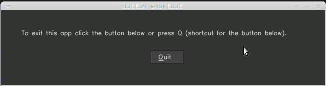 |
| ./canny | 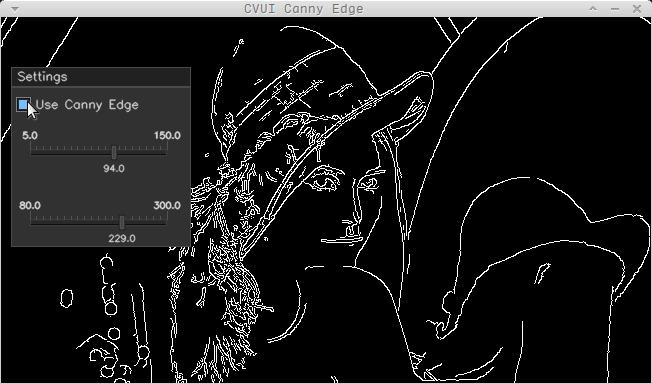 |
| ./complex-layout | 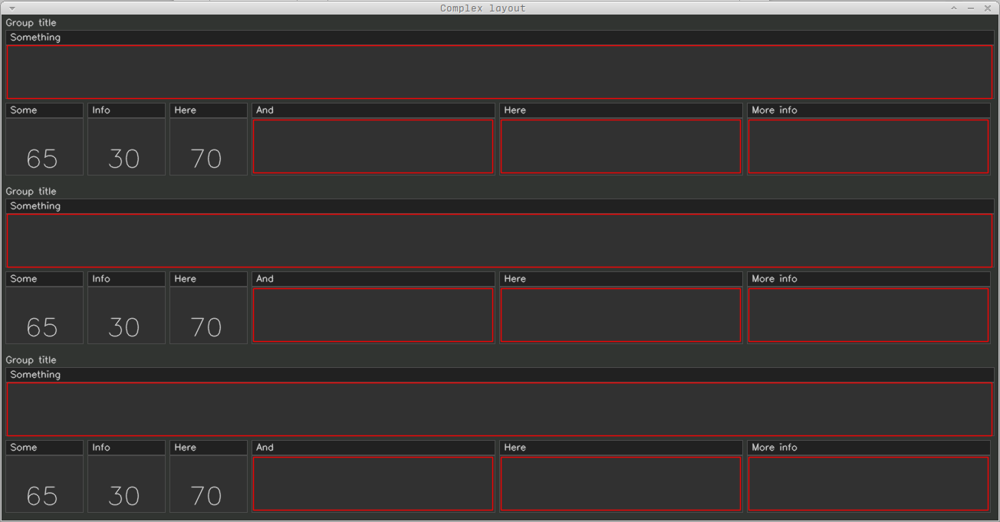 |
| ./hello-world | 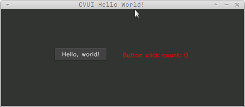 |
| ./image-button |
|
| ./interaction-area | 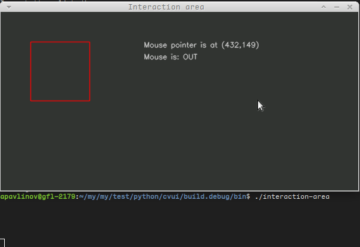 |
| ./main-app | 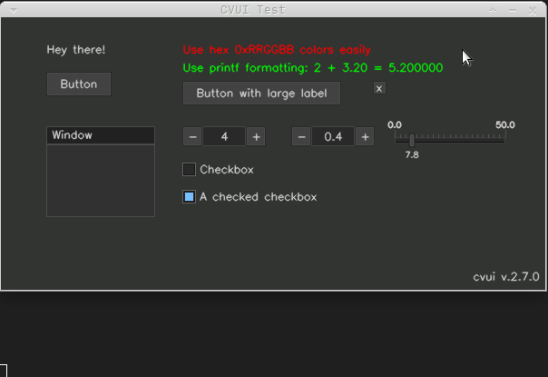 |
| ./mouse | 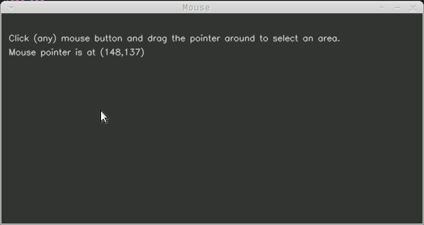 |
| ./mouse-complex | 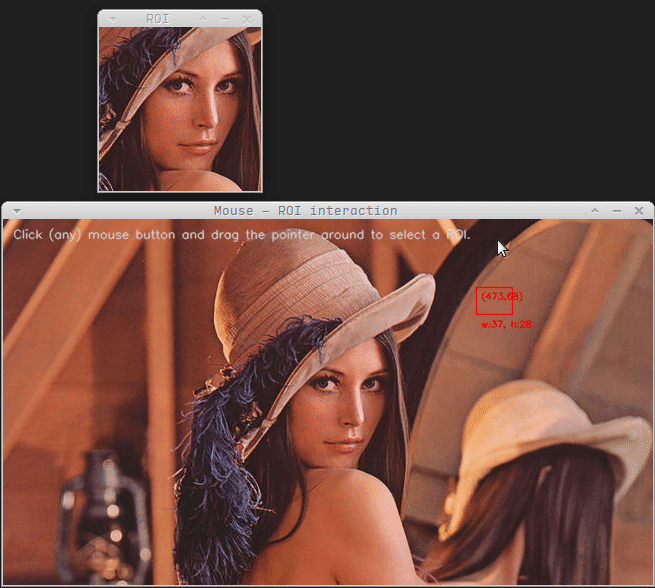 |
| ./mouse-complex-buttons | 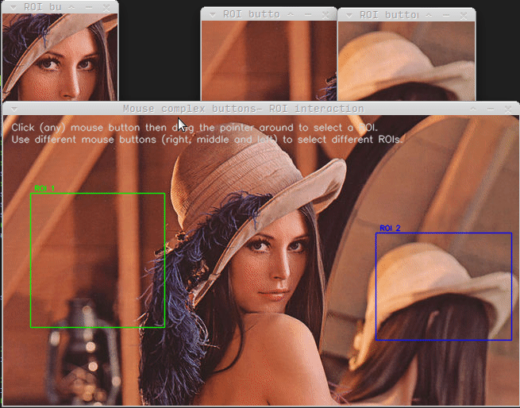 |
| ./multiple-files | 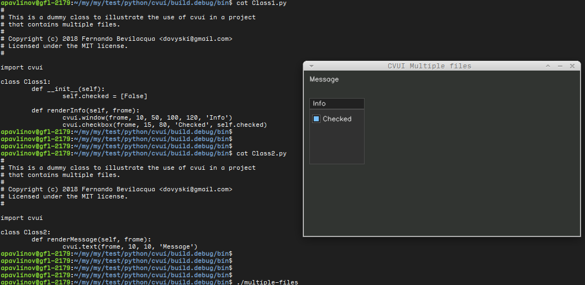 |
| ./multiple-windows | 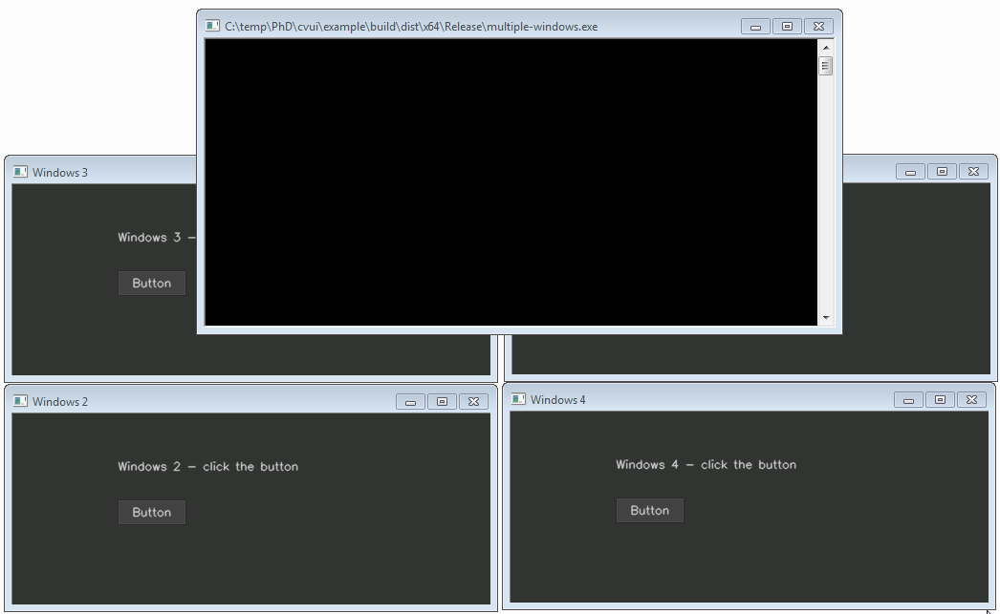 |
| ./multiple-windows-complex | 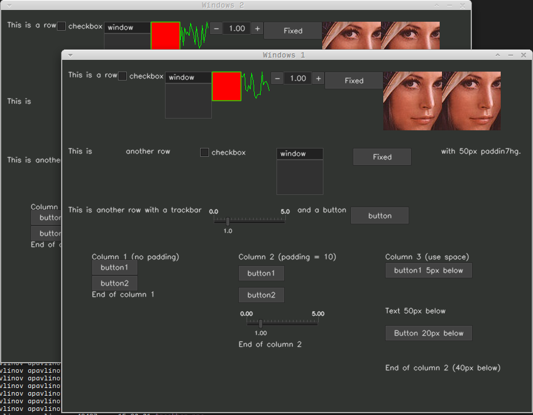 |
| ./multiple-windows-complex-dynamic | 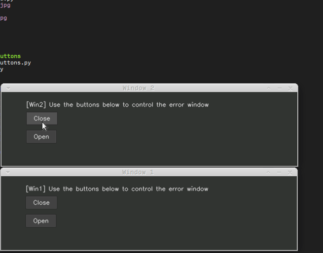 |
| ./multiple-windows-complex-mouse | 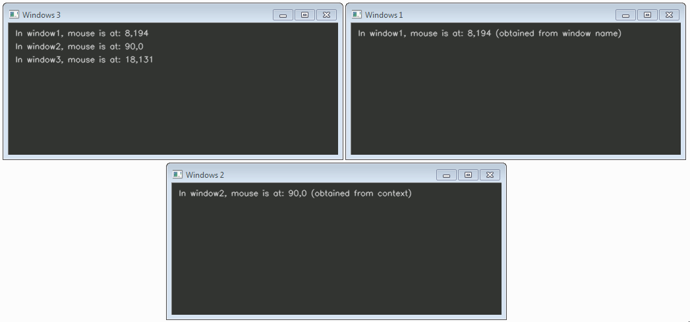 |
| ./nested-rows-columns | 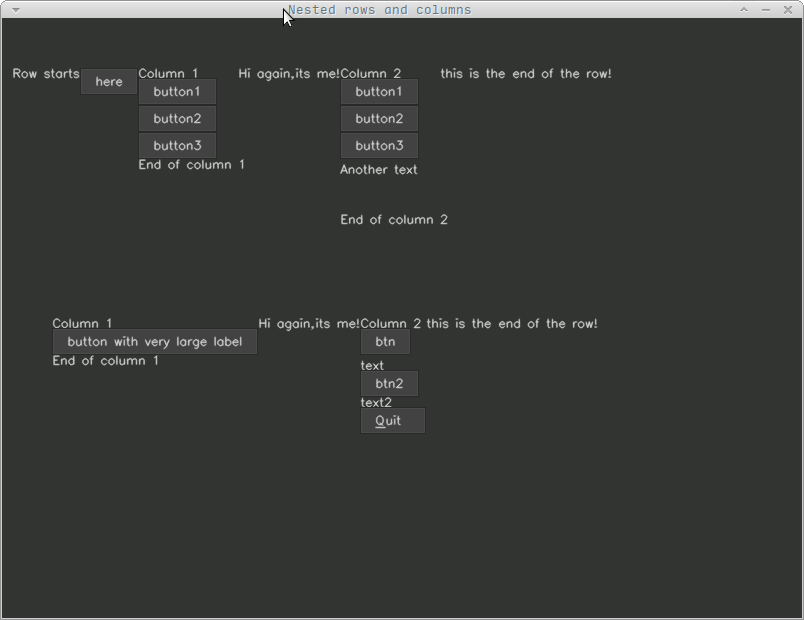 |
| ./on-image |
|
| ./row-column | 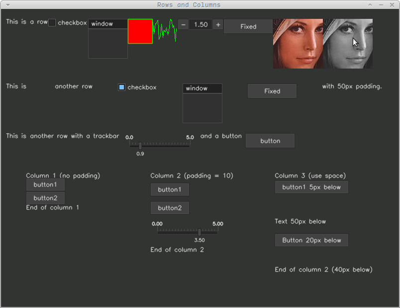 |
| ./sparkline | 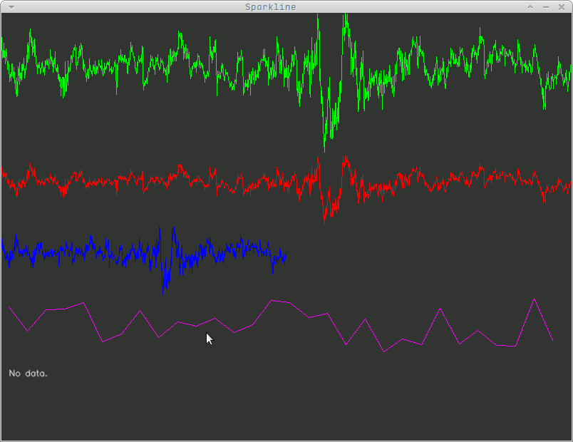 |
| ./trackbar | 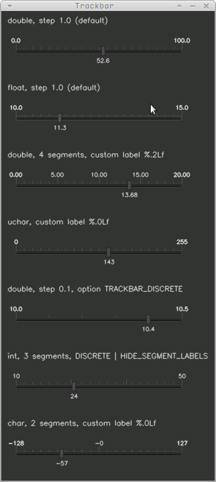 |
| ./trackbar-complex | 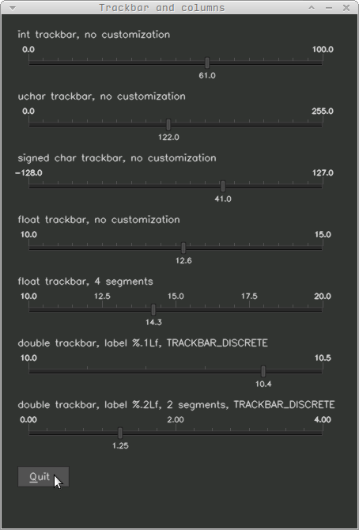 |
| ./trackbar-sparkline | 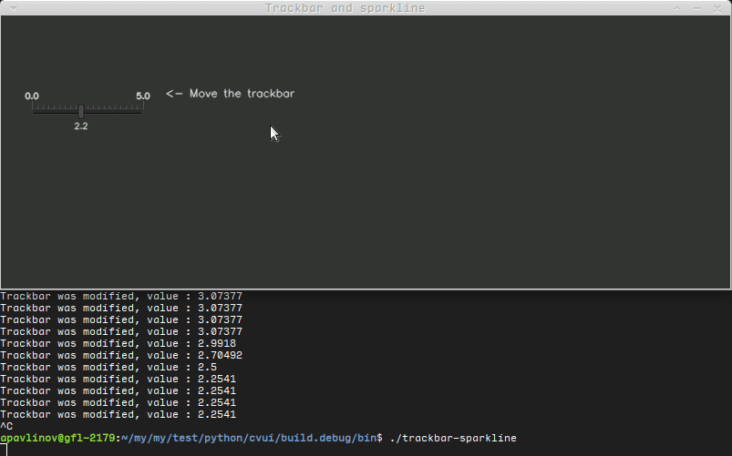 |
| ./ui-enhanced-canny | 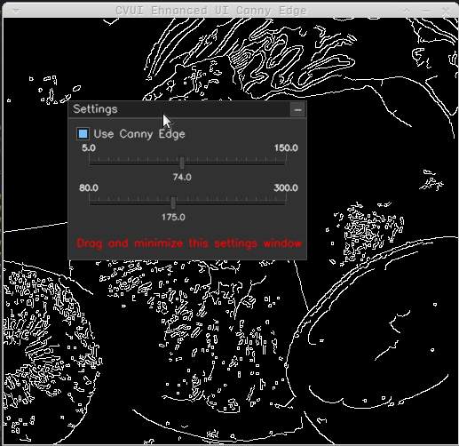 |
| ./ui-enhanced-window-component | 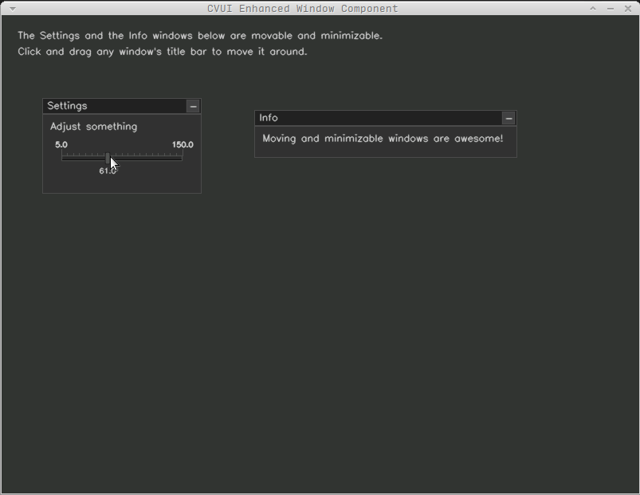 |